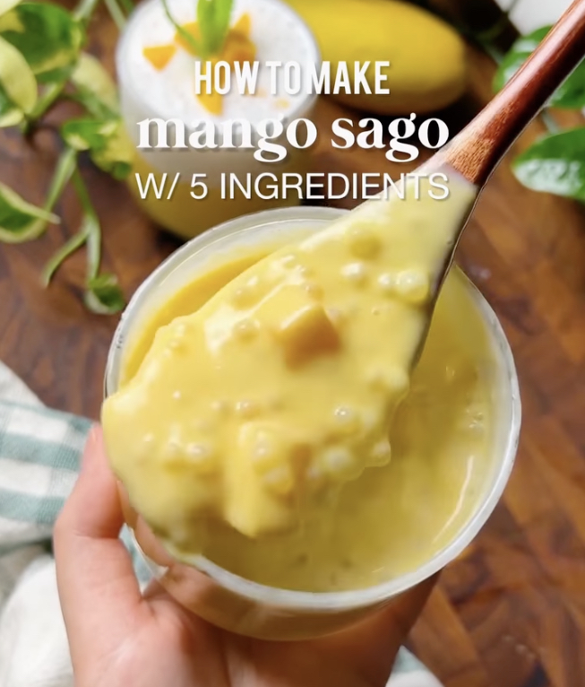

Mango Sago

Mango sago is a popular summer dessert originating from Hong Kong. You can find the recipe on smelly.lunchbox's Instagram page.
Tip:
Use ripe champagne mangoes. You can get these mangoes and the rest of the ingredients at 99 Ranch Market.
Ingredients
- 3 ripe champagne mangoes
- 2-3 Tbsp uncooked small tapioca pearls
- 1/4 cup sweetened condensed milk
- 1 cup (1/2 of 12oz can) evaporated milk
- 3/4 cup (1/2 of 13.5oz can) full fat unsweetened coconut milk
Procedure
- Bring a pot of at least 6 cups of water to boil. Add 2-3 tbsp of uncooked tapioca pearls and simmer until the pearls are almost fully translucent, or about 15 min. They should still have a tiny white dot in the middle.
- While it’s boiling, slice 3 mangoes into cubes.
- After 15 min, strain the tapioca pearls and rinse in cold water. Let sit in a bowl of water (this prevents them from hardening).
- Put 2/3 of the mango cubes into a blender, and blend with sweetened condensed milk and evaporated milk. If you like it sweeter, add more condensed milk. If you want it thinner, add more evaporated milk. This emulsion should be a little on the sweeter side so that when we mix it with coconut milk, the flavors balance out.
- Drain tapioca pearls and mix with coconut milk.
- (Optional) Layer into glass cup or jar by adding in blended mango first, then topping with tapioca + coconut milk mixture. Or, just mix everything together.
- Top with remaining mango cubes, mix, and enjoy!